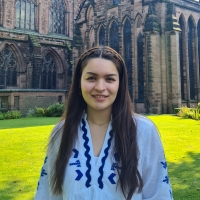

Camila Sol Moya Casanova | WDD 130
Hi! Welcome to my homepage. I'm Camila from Santiago, Chile. I like singing and playing piano, I love traveling and I hope to be able to travel a lot in the future. I also really like baking, painting, listening to music, and watching movies to relax. Some books that I've been enjoying lately are: Pride and Prejudice, To All the Boys I've Loved Before (series), and Lessons in Chemistry (I'm still reading that one). I'm happy to be in this class and to be learning HTML and CSS. 🌷
Here are some of my favorite temples: